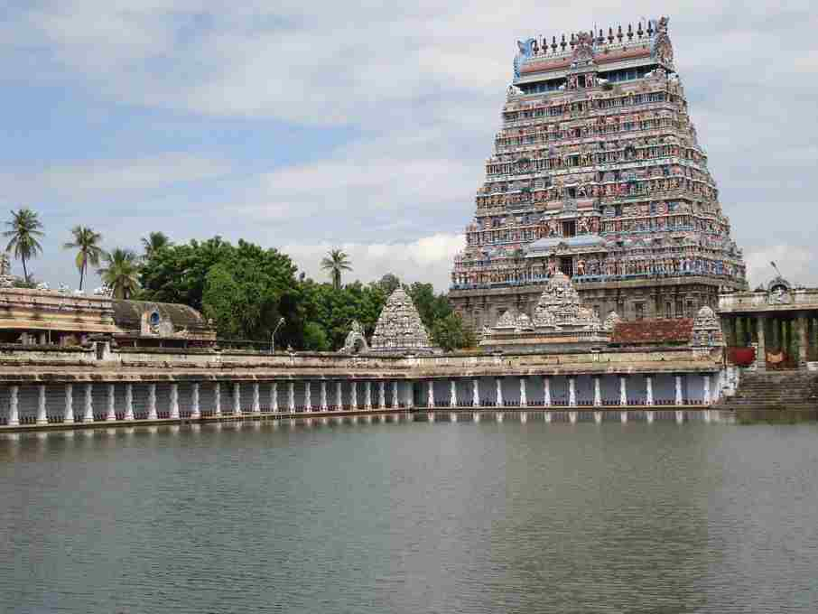
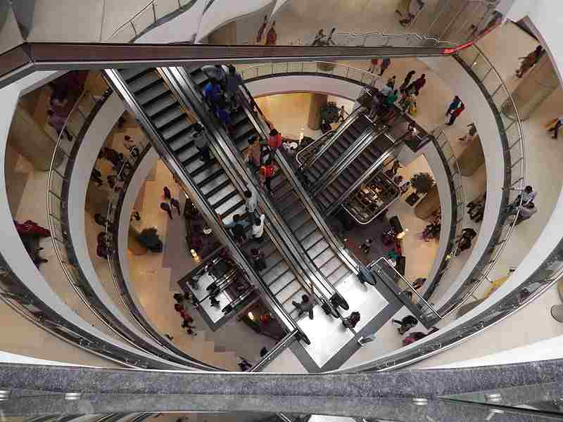

About Chennai
Chennai (also known as, Madras) is the capital city of the Indian state of Tamil Nadu. Located on the Coromandel Coast off the Bay of Bengal, it is the biggest industrial and commercial centre in South India, and a major cultural, economic and educational centre. Chennai is known as the "Detroit of India" for its automobile industry. Chennai is the fifth-largest city and fourth-most populous metropolitan area in the country and 31st-largest urban area in the world.
History
The region around Chennai has served as an important administrative, military, and economic centre for many centuries. During 1st century CE, a poet and weaver named Thiruvalluvar lived in the town of Mylapore (a neighbourhood of present Chennai). From 1st century CE until 12th CE the region of present Tamil Nadu and parts of South India was ruled by the Cholas.Stone age implements have been found near Pallavaram in Chennai. According to the Archaeological Survey of India (ASI), Pallavaram was a megalithic cultural establishment, and pre-historic communities resided in the settlement. The Pallavas of Kanchi built the areas of Mahabalipuram and Pallavaram during the reign of Mahendravarman I. They also defeated several kingdoms including the Cheras, Cholas and Pandyas who ruled over the area before their arrival. Sculpted caves and paintings have been identified from that period.Ancient coins dating to around 500 BC have also been unearthed from the city andits surrounding areas. A portion of these findings belonged to the Vijayanagara Empire, which ruled the region during the medieval period.
Geography
Latitude:13.0827┬░ N
Longitude80.2707┬░ E
STD Code: 044
Chennai which is situated near the 13th north parallel and 80 degree longitude stretches its 19 km length along the Coromandel Coast. 172 sq. km. is covered by its irregular shape. Its highest point is only 60 m above sea level. Moreover, it is a low-lying strip of land.
Chennai is located on Eastern Coastal Plains - flat plains, on the southeast coast of India and towards the northeast of Tamil Nadu. Its average elevation is around 6.7 meters (22 ft) whereas its highest point is 60 m (200 ft). The shoreline of Marina Beach is spread over 12 km along the cityРђЎs shoreline.
The Cooum River divides the city into a half whereas the river Adyar divides the southern half into two parts trisecting the city of Chennai. These rivers flow towards the East. A third river, the Kortalaiyar, flows through the northern peripheries of the city before draining into the sea at Ennore. Parallel to the coast, one can see the historic Buckingham canal running almost through the entire length of the city.
Governemnt Website
Culture
Popularly called the "Gateway to the South", Chennai culture is distinctly different from that of any other city in India. Being a cosmopolitan city, the culture of the city reflects its diverse population which has resulted in a unique blend. Though a modern city, it continues to be traditional and conventional in certain ways. Traditional music, dance and all other art forms of Tamil Nadu are very popular in the city. One can find a unique blend of culture from traditional foods to fast foods, from ancient temple architecture to modern high-rises and from classical music and dance to the growing nightlife in the city.
Tamil is the city's first language. English is spoken widely in South Chennai and Central Chennai,[Kanchipuram & Chennai district] and is used almost exclusively in business, education and other white collar professions. Tamil spoken in Chennai uses English words liberally, so much so that it is often called Madras bhashai (Tamil for "Madras language"). Other languages spoken in the city include Telugu, Malayalam and Urdu and they contribute to the vocabulary of Madras bhashai as well.
Chennai celebrates a number of festivals. Pongal, celebrated in the month of January, is the most important festival of and is celebrated over a period of five days. Pongal has been designated the "State Festival" for its unique celebration that is typical of Tamil Nadu. Though a harvest festival it is still celebrated widely in the city. Tamil New Year's Day signifying the beginning of the Tamil calendar usually falls on April 14 and is celebrated widely. Being a cosmopolitan city, almost all major religious festivals like Deepavali, Eid and Christmas are celebrated here.
Cuisine
Dosa with Chutney and Sambhar
A Chennai Thali Meals
Chennai, the land of historical and cultural legacies, is noted for its rich classical music, centuries old film industry and finger-licking South Indian delicacies. The mildly hot traditional cuisine of Chennai, loaded with rice, legumes, lentils and a host of spices, promises to be a sensory overload. From yummy appam to finger-licking Chettinad Chicken to highly aromatic filter coffee, Chennai cuisine is all about zest and flavors. But that is not all to Chennai food. If you think that food options in Chennai are limited to idli, vadas and upmas, then you couldn't be more wrong. Chennai has legions of restaurants catering to cuisines from all across the globe. With an exciting variety of both local and continental cuisine catering to a host of delish delicacies from all across the globe, dinning in Chennai definitely promises to be a memorable experience for the epicureans. If you wish to know more about the savories of Chennai, then dig deep into this article and know more about popular Chennai food.
Chennai Food Guide
Local Cuisine
The deep influence of Tamil culture can be well perceived in the local cuisine of this coastal city. Chennai cuisine is a blend of different flavors like sweet, sour, bitter and spicy and offers quite an extensive range of delicacies when it comes to talking of breakfast, lunch and dinner. Idli, vada, dosa, idiyappam, uppma and pongal are some of the city's favorite breakfast choices. For lunch or dinner, you can bet on traditional meal of rice, vegetable curry, sambar, rasam, curds etc. If you love non-vegetarian food, then the famous Chettinad dishes are a must-try. Apart from this, Chennai is also known for its filter coffee. The Saravanaa Bhavan Group of restaurants in Chennai is quite famous for its excellent vegetarian meals. Some of the other popular restaurants of Chennai are Vasanta Vihar at Rajaji Salai, Ananda Bhavan at Triplicane High Road, Mathura Restaurant at Tarapore Tower Anna Salai and Usilampatti at Lattice Bridge Road.
Indian Cuisine
Although the city's food tradition is majorly influenced by authentic Tamil Nadu cuisine, Chennai has some delectable regional cuisines to offer to its gastronomists. With the changing trend and lifestyle, Chennai has become home to spicy North Indian, sweet Bengali, rich Punjabi and many other regional foods. With a huge number of restaurants catering to diverse dishes from other states, people can enjoy any regional dish of their choice during their trip to Chennai. Bay Leaf restaurant on Ambujambal Street in Alwarpet is famous for its mouthwatering Punjabi and Bengali foods. Some of the other well-known Indian cuisine restaurants are Breeze Hotel at Chetpet, 16th Century at Mylapore, Dhaba Express on Cenotaph Road and Hotel Ashoka at Pantheon Street in Egmore.
International cuisine
Chennai cuisine is not just limited to traditional and regional cuisines, but has extended its platter to a diverse range of dishes that caters to the globetrotters from all over the world. Although European, Chinese and Continental cuisines have been an integral part of city's a la carte, Mexican, Thai, Italian, Japanese and Korean have slowly and successfully made their to the menu cards here. Some of the popular international cuisine restaurants are La Madeleine on Kasturi Rangan Estate, China Town at Cathedral Road and Cedars in Kotturpuram.
Famous Personalities
SuperStar Rajinikanth
Sir C V Raman

Chess Champion Viswanath Anand
Music Maestro A.R.Rahman
Music Composer,Ilayaraja
Ex President A.P.J Abdul Kamal
Ulaganayagan kamal Hassan
Sundar Pichai, Senior Vice President of Android
Naveen Selvadurai, Co-Founder Foursquare
Indra Nooyi,CEO of PepsiCo
City Administration
1.Saidai Duraisamy-
Honorable Mayor
Corporation of Chennai, Ripon Building, Chennai - 600003
Call:
044-25619300 /
044-25384438
2.P.Benjamin- Deputy Mayor
Corporation of Chennai, Ripon Building, Chennai - 600003
Call:044-25619210 /
044-25382979
9445467145
3.Vikram Kapur I.A.S - Principal Secretary /Commissioner
Corporation of Chennai, Ripon Building, Chennai - 600003
Call:044-25381330
044-25619200 9445419966
4.K.S.Kandasamy, I.A.S - Deputy Commissioner (Works)
Corporation of Chennai, Ripon Building, Chennai - 600003
Call:9445190998
25384231/25619351
5.Shilpa Prabhakar Satish , I.A.S- Deputy Commissioner(R& F)(i/c)
Corporation of Chennai, Ripon Building, Chennai - 600003
Call: 9445190995
25369444 /25619306
6.R.Kannan
Assistant Commissioner (GA&P)(i/c) General Department
Corporation of Chennai, Ripon Building, Chennai - 600003
Call:9445190300
25383732/25619231
Holy Places

Kapaleeshwar Temple
Kandasamy Temple
Vadapalani Murugan Temple
Parthasarathy Temple
Big Mosque
Fort St.George Church
Hotel
1.Savera Hotel
146, Dr Radhakrishna Road
2.Ramada Chennai-Egmore
Gandhi Irwin Road,Next to CMDA Building
3.GLM Meridian
# 80-A, Dr Chevalier Sivaji Ganesan Salai,South Boag Road
4.The Raintree, Anna Salai
636,Anna Salai, Teynampet
5.Hotel Mount Heera
No,287, M K M Road,St Thomas Mount
6.Lemon Tree Hotel,Shimona
31/3, Mount Poonamalle High Road, Manapakkam
7.Hotel JP Chennai-CMBT
1131, Inner Ring Road
8.Hotel Manickam Grand
30 G.S.T Road
9.Fortune Select Palms
142, Thoraipakkam
10.Flamingo
112,113 AL Block 4 4th Avenue Shanti Colony
Tourist Attractions
Marina Beach
Elliots Beach

Phoenix Market City
Express Avenue
Mahabalipuram Shore View
Pulicat lake
Arignar Anna Zoological Park
Semmozhi Poonga(park)
The Huddleston Gardens Of Theosophical Society